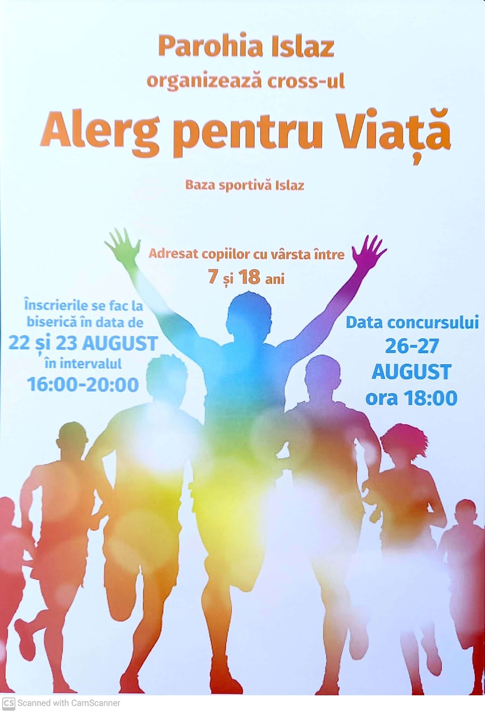

Parohia Islaz
Sfinții Apostoli Petru și Pavel

Pentru accesarea rezultatelor, apăsați aici.
În nădejdea descoperirii mesajului lui Hristos către fiecare om, Parohia Islaz vine spre copiii comunității noastre parohiale cu un concurs de alergat în care aceștia să își manifeste spiritul în dezvoltare și calitățile trupești și sufletești.
Concursul, denumit Alerg pentru Viață, constă în probe de alergare liberă pe un traseu predefinit, pe terenul de fotbal al satului din cadrul bazei sportive. Proba de efort va fi personalizată în funcție de vârsta fiecărei grupe de vârstă, fiind reprezentată de un anumit număr de ture ale terenului.
Punctual, detaliile legate de eveniment sunt următoarele:
- datele de înscriere ale concursului sunt:
- zilele de desfășurare ale concursului sunt:
- grupele de participanți vor fi formate din:
Pentru buna desfășurare a concursului, facem un apel pentru îndemnarea copiilor la înscrierea la concurs. Înscrierea va consta în completarea unei fișe de înscriere de către unul dintre părinți, însoțită de o copie a cărții de identitate și o copie a certificatului de naștere al copilului.
Totodată, pentru asigurarea logisticii necesare unei astfel de manifestări, vom avea nevoie de voluntari care să asigure bunul mers al concursului. Pentru aceasta, îi rugăm pe tinerii peste 18 ani (și pe cei până în 18 ani, neparticipanți la concurs), să vină alături de noi pentru a ne ajuta în organizare.
Premiile acordate vor fi:
- locul I:
- locul II:
- locul III:
Toți participanții vor primi diplome de participare personalizate Alerg pentru Viață și se vor bucura – pe lângă atmosfera de competiție – de sucuri, apă, voie bună și tot ce le vom putea oferi spre buna dispoziție.
Vă așteptăm cu bucurie!